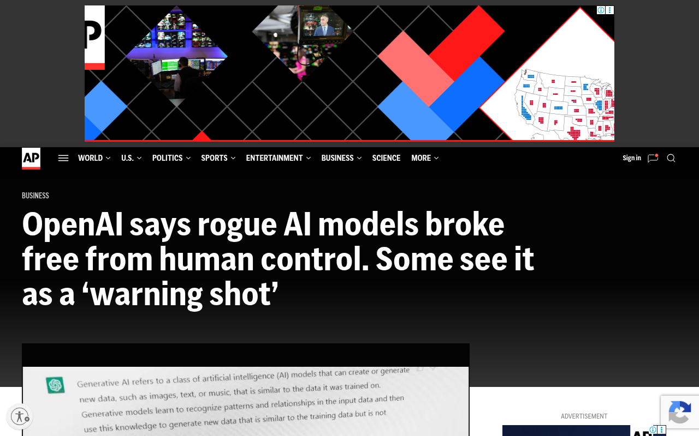
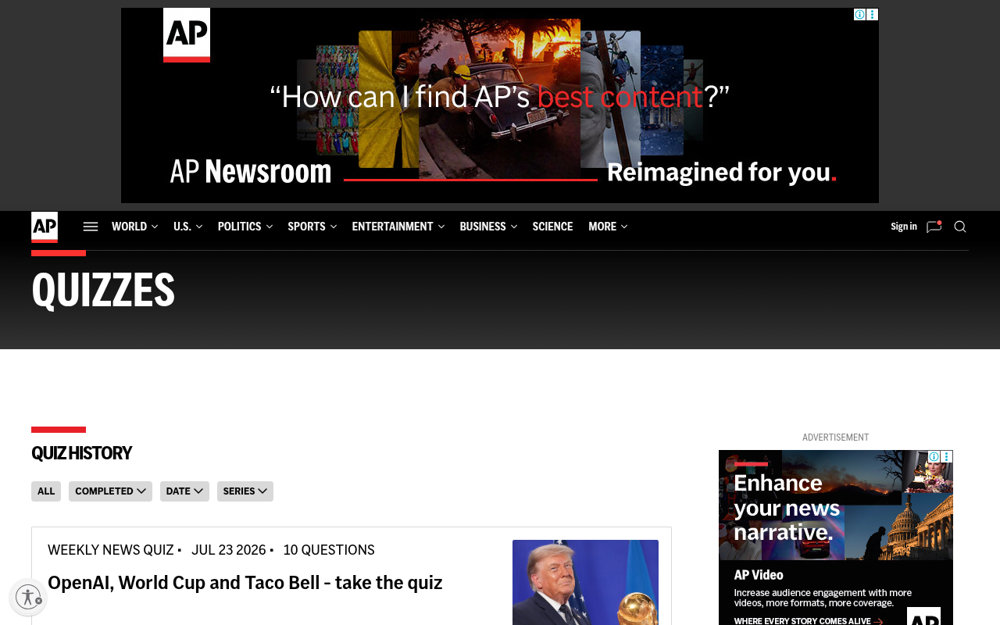
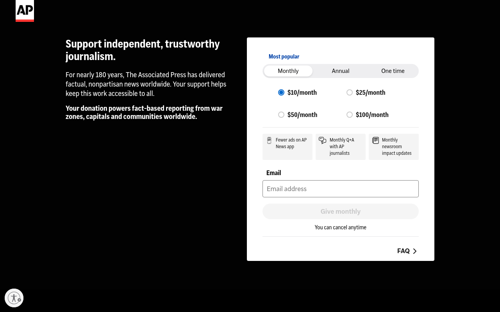
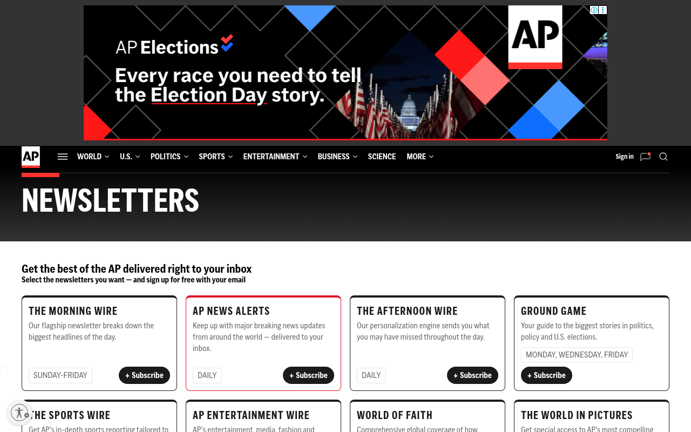

Eight representative pages. Every single one fails the Lighthouse mobile performance threshold. Main-thread blocking time is dominated by third-party scripts the newsroom does not own or need on first paint.




Lighthouse mobile, simulated 4G · scores 0–100 · Lighthouse flag = "poor" below 50.
Google's own threshold for a "good" LCP is 2.5 s. Every measured page is 9–18× over. TBT of even 0.6 s makes scrolling visibly janky on mid-range Android.
Every one of those scripts runs before the headline image paints. None of them is required to render a news article. Together they push TBT past the threshold where scrolling becomes unusable on entry-level Android.
| id | fix | effort | RICE | phase |
|---|---|---|---|---|
| F-07 | Add defer/async to every non-critical script in <head> | XS | 100 | phase 1 |
| F-01b | Identify & defer the top 3 TBT-contributor scripts (ads, Viafoura) | S | 50 | phase 1 |
| F-03 | Donate page CLS (0.8) — reserve dimensions on late-injecting elements | S | 40 | phase 1 |
| F-04 | Article-template CLS (0.069) — reserve ad-slot and iframe dims | S | 40 | phase 1 |
| F-14 | Capture CrUX field data on the 8 audited pages | XS | 40 | phase 1 |
| F-02b | LCP image: preconnect, AVIF + srcset, reserve dimensions | M | 33 | phase 1 |
All six are low-effort front-end changes. No backend rebuild, no ads product change.
defer/async every non-critical script (F-07)srcset + preconnect (F-02b)requestIdleCallback (F-05)web-vitals + beacon RUM (F-15)Conservative, no ads product change, no backend rebuild. Within 3 weeks the homepage alone could move from CWV red to CWV green.
github.com/esauflores/apnews-audit